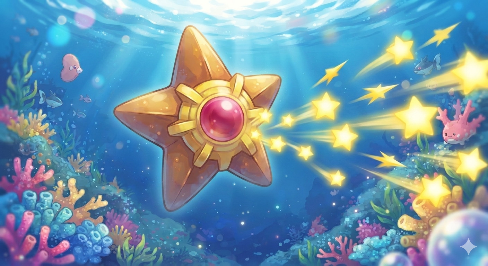
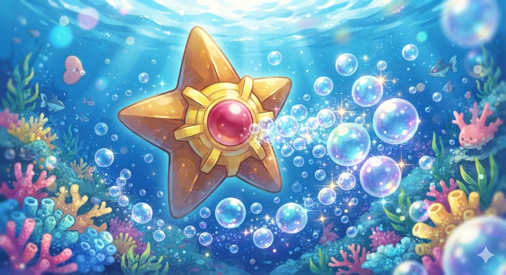
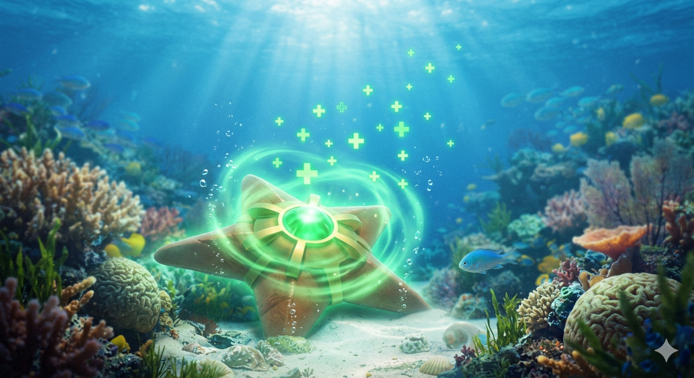
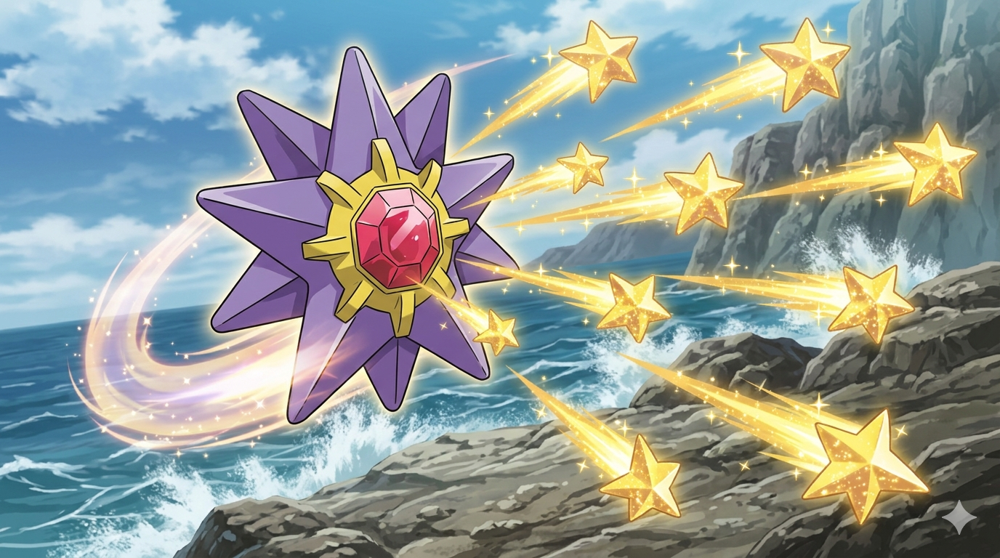

Staryu é um Pokémon do tipo Água introduzido na Primeira Geração da franquia, conhecido por seu corpo único em formato de estrela-do-mar de cinco pontas. Sua característica mais marcante é o núcleo de joia vermelha brilhante localizado em seu centro, que é mantido no lugar por uma estrutura dourada semelhante a um anel. Esse núcleo serve como o coração do Pokémon e funciona como um indicador de sua saúde e estado emocional: quando Staryu está fraco ou doente, a joia começa a piscar suavemente, emitindo um sinal de alerta.


Uma das capacidades biológicas mais fascinantes do Staryu é o seu impressionante poder de regeneração. Se o seu corpo sofrer danos em batalha ou for atacado por predadores marinhos, ele consegue reconstruir qualquer um de seus membros perdidos em um curto espaço de tempo, desde que o seu núcleo central permaneça intacto. Além disso, essa espécie possui uma forte conexão com o cosmos. Durante a noite, grupos de Staryu costumam flutuar até a superfície do oceano e alinhar seus núcleos brilhantes com as estrelas do céu noturno, brilhando em uníssono em um comportamento que muitos pesquisadores associam a uma forma de comunicação extraterrestre.

Em termos de combate e evolução, Staryu é um aliado versátil e ágil para os treinadores. Apesar de ser um tipo Água puro, ele consegue aprender uma grande variedade de movimentos de outros tipos, incluindo ataques Psíquicos e Elétricos, o que surpreende os adversários em batalhas. Quando exposto à radiação de uma Pedra da Água (Water Stone), Staryu evolui para Starmie, expandindo seu corpo para dez pontas, adquirindo o tipo Psíquico secundário e transformando seu núcleo central em uma joia multicolorida com poderes mentais amplificados.
